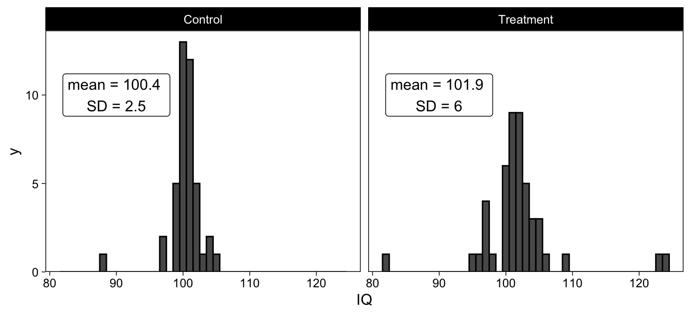
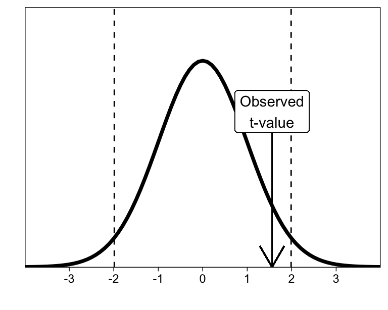

![]()
library(knitr)
library(kableExtra)
library(scales)
library(broom)
library(brms)
library(tidyverse)Introduction
Happy New Year 2017 everybody! 2017 will be the year when social scientists finally decided to diversify their applied statistics toolbox, and stop relying 100% on null hypothesis significance testing (NHST). We now recognize that different scientific questions may require different statistical tools, and are ready to adopt new and innovative methods. A very appealing alternative to NHST is Bayesian statistics, which in itself contains many approaches to statistical inference. In this post, I provide an introductory and practical tutorial to Bayesian parameter estimation in the context of comparing two independent groups’ data.
More specifically, we’ll focus on the t-test. Everyone knows it, everyone uses it. Yet, there are (arguably) better methods for drawing inferences from two independent groups’ metric data (Kruschke 2013):
“When data are interpreted in terms of meaningful parameters in a mathematical description, such as the difference of mean parameters in two groups, it is Bayesian analysis that provides complete information about the credible parameter values. Bayesian analysis is also more intuitive than traditional methods of null hypothesis significance testing (e.g., Dienes, 2011).” (Kruschke 2013)
In that article (“Bayesian estimation supersedes the t-test”) Kruschke (2013) provided clear and well-reasoned arguments favoring Bayesian parameter estimation over null hypothesis significance testing in the context of comparing two groups, a situation which is usually dealt with a t-test. It also introduced a “robust” model for comparing two groups, which modeled the data as t-distributed, instead of normal. The article provided R code for running the estimation procedures, which could be downloaded from the author’s website or as an R package.
The R code and programs work well for this specific application (estimating the robust model for one or two groups’ metric data). However, modifying the code to handle more complicated situations is not easy, and the underlying estimation algorithms don’t necessarily scale up to handle more complicated situations. Therefore, in this blog post I’ll introduce easy to use, free, open-source, state-of-the-art computer programs for Bayesian estimation, in the context of comparing two groups’ metric (continuous) data. The programs are available for the R programming language—so make sure you are familiar with R basics (e.g. here). I provide R code for t-tests and Bayesian estimation in R using the R package brms, which provides a concise front-end layer to Stan.
These programs supersede many older Bayesian inference programs because they are easy to use, fast, and are able to handle models with thousands of parameters. Learning to implement basic analyses such as t-tests, and Kruschke’s robust model, with these programs is very useful because you’ll then be able to do Bayesian statistics in practice, and will be prepared to understand and implement more complex models.
Understanding the results of Bayesian estimation requires some knowledge of Bayesian statistics, of course, but since I cannot cover everything in this one post, I refer readers to excellent books on the topic: McElreath (2020), Kruschke (2014), Gelman et al. (2013).
First, I’ll introduce the basic t-test in some detail, and then focus on understanding them as specific instantiations of linear models. If that sounds familiar, skip ahead to Bayesian Estimation of the t-test, where I introduce the brms package for estimating models using Bayesian methods. Following that, we’ll use “distributional regression” to obtain Bayesian estimates of the unequal variances t-test model. Finally, we’ll learn how to estimate the robust unequal variances model using brms.
We will use the following R packages:
The t in a t-test
We’ll begin with t-tests, using example data from Kruschke’s paper (p. 577):
“Consider data from two groups of people who take an IQ test. Group 1 (N1=47) consumes a “smart drug,” and Group 2 (N2=42) is a control group that consumes a placebo.”
These data are visualized as histograms, below:

Equal variances t-test
These two groups’ IQ scores could be compared with a simple equal variances t-test (which you shouldn’t use; Lakens, 2015), also known as Student’s t-test.
t.test(IQ ~ Group, data = d, var.equal = T)
##
## Two Sample t-test
##
## data: IQ by Group
## t = -1.5587, df = 87, p-value = 0.1227
## alternative hypothesis: true difference in means between group Control and group Treatment is not equal to 0
## 95 percent confidence interval:
## -3.544155 0.428653
## sample estimates:
## mean in group Control mean in group Treatment
## 100.3571 101.9149We interpret the t-test in terms of the observed t-value, and whether it exceeds the critical t-value. The critical t-value, in turn, is defined as the extreme \(\alpha / 2\) percentiles of a t-distribution with the given degrees of freedom.

The test results in an observed t-value of 1.56, which is not far enough in the tails of a t-distribution with 87 degrees of freedom to warrant rejecting the null hypothesis (given that we are using \(\alpha\) = .05, which may or may not be an entirely brilliant idea).
Unequal variances t-test
Next, we’ll run the more appropriate, unequal variances t-test (also known as Welch’s t-test), which R gives by default:
t.test(IQ ~ Group, data = d, var.equal = F)
##
## Welch Two Sample t-test
##
## data: IQ by Group
## t = -1.6222, df = 63.039, p-value = 0.1098
## alternative hypothesis: true difference in means between group Control and group Treatment is not equal to 0
## 95 percent confidence interval:
## -3.4766863 0.3611848
## sample estimates:
## mean in group Control mean in group Treatment
## 100.3571 101.9149Note that while R gives Welch’s t-test by default, SPSS gives both. If you’re using SPSS, make sure to report the Welch’s test results, instead of the equal variances test. Here, the conclusion with respect to rejecting the null hypothesis of equal means is the same. However, notice that the results are numerically different, as they should, because these two t-tests refer to different models.
It is of course up to you, as a researcher, to decide whether you assume equal variances or not. But note that we almost always allow the means to be different (that’s the whole point of the test, really), while many treatments may just as well have an effect on the variances.
The first take-home message from today is that there are actually two t-tests, each associated with a different statistical model. And to make clear what the difference is, we must acquaint ourselves with the models.
Describing the model(s) underlying the t-test(s)
We don’t often think of t-tests (and ANOVAs) as models, but it turns out that they are just linear models disguised as “tests” (see here, here, and here). Recently, there has been a tremendous push for model/parameter estimation, instead of null hypothesis significance testing (Gigerenzer 2004; Cumming 2014; Kruschke 2014), so we will benefit from thinking about t-tests as linear models. Doing so will facilitate seamlessly expanding our models to handle more complicated situations.
The equal variances t-test models metric data with three parameters: Mean for group A, mean for group B, and one shared standard deviation (i.e. the assumption that the standard deviations are equal between the two groups.)
We call the metric outcome variable (IQ scores in our example) \(y_{ik}\), where \(i\) is a subscript indicating the \(i^{th}\) datum, and \(k\) indicates the \(k^{th}\) group. So \(y_{19, 1}\) would be the 19th datum, belonging to group 1. Then we specify that \(y_{ik}\) are normally distributed, \(N(\mu_{k}, \sigma)\), where \(\mu_{k}\) indicates the mean of group \(k\), and \(\sigma\) the common standard deviation.
\[y_{ik} \sim N(\mu_{k}, \sigma^2)\]
Read the formula as “Y is normally distributed with mean \(\mu_{k}\) (mu), and standard deviation \(\sigma\) (sigma)”. Note that the standard deviation \(\sigma\) doesn’t have any subscripts: we assume it is the same for the groups.
The means for groups 0 and 1 are simply \(\mu_0\) and \(\mu_1\), respectively, and their difference (let’s call it \(d\)) is \(d = \mu_0 - \mu_1\). The 95% CI for \(d\) is given in the t-test output, and we can tell that it differs from the one given by Welch’s t-test.
It is unsurprising, then, that if we use a different model (the more appropriate unequal variances model), our inferences may be different. Welch’s t-test is the same as Student’s, except that now we assume (and subsequently estimate) a unique standard deviation \(\sigma_{k}\) for both groups.
\[y_{ik} \sim N(\mu_{k}, \sigma_{k}^2)\]
This model makes a lot of sense, because rarely are we in a situation to a priori decide that the variance of scores in Group A is equal to the variance of scores in Group B. If you use the equal variances t-test, you should be prepared to justify and defend this assumption. (Deciding between models—such as between these two t-tests—is one way in which our prior information enters and influences data analysis.)
Armed with this knowledge, we can now see that “conducting a t-test” can be understood as estimating one of these two models. By estimating the model, we obtain t-values, degrees of freedom, and consequently, p-values.
However, for the models described here, it can be easier to think of the t-test as a specific type of the general linear model. We can re-write the t-test in an equivalent way, but instead have a specific parameter for the difference in means by writing it as a linear model. The equal variance model can be written as
\[y_{ik} \sim N(\mu_{k}, \sigma^2)\] \[\mu_{k} = \beta_0 + \beta_1 Group_{ik}\]
Here, \(\sigma\) is just as before, but we now model the mean with an intercept (control group’s mean, \(\beta_0\)) and the effect of the treatment (\(\beta_1\)). With this model, \(\beta_1\) directly tells us the estimated difference in the two groups. And because it is a parameter in the model, it has an associated standard error, t-value, degrees of freedom, and a p-value. The model can be estimated in R with the following line of code:
olsmod <- lm(IQ ~ Group, data = d)The key input here is a model formula, which in R is specified as outcome ~ predictor (DV ~ IV). Using the lm() function, we estimated a linear model predicting IQ from an intercept (automatically included) and a Group parameter. I called this object olsmod for Ordinary Least Squares Model.
R has it’s own model formula syntax, which is well worth learning. The formula in the previous model, IQ ~ Group means that we want to regress IQ on an intercept (which is implicitly included), and group (Group). Besides the formula, we only need to provide the data, which is contained in d.
You can verify that the results are identical to the equal variances t-test above.
summary(olsmod)
##
## Call:
## lm(formula = IQ ~ Group, data = d)
##
## Residuals:
## Min 1Q Median 3Q Max
## -19.9149 -0.9149 0.0851 1.0851 22.0851
##
## Coefficients:
## Estimate Std. Error t value Pr(>|t|)
## (Intercept) 100.3571 0.7263 138.184 <2e-16 ***
## GroupTreatment 1.5578 0.9994 1.559 0.123
## ---
## Signif. codes: 0 '***' 0.001 '**' 0.01 '*' 0.05 '.' 0.1 ' ' 1
##
## Residual standard error: 4.707 on 87 degrees of freedom
## Multiple R-squared: 0.02717, Adjusted R-squared: 0.01599
## F-statistic: 2.43 on 1 and 87 DF, p-value: 0.1227Focus on the GroupTreatment row in the estimated coefficients. Estimate is the point estimate (best guess) of the difference in means. t value is the observed t-value (identical to what t.test() reported), and the p-value (Pr(>|t|)) matches as well. The (Intercept) row refers to \(\beta_0\), which is the control group’s mean.
This way of thinking about the model, where we have parameters for one group’s mean, and the effect of the other group, facilitates focusing on the important parameter, the difference, instead of individual means. However, you can of course compute the difference from the means, or the means from one mean and a difference.
Bayesian estimation of the t-test
Equal variances model
Next, I’ll illustrate how to estimate the equal variances t-test using Bayesian methods.
Estimating this model with R, thanks to the Stan and brms teams, is as easy as the linear regression model we ran above. The most important function in the brms package is brm(), for Bayesian Regression Model(ing). The user needs only to input a model formula, just as above, and a data frame that contains the variables specified in the formula. brm() then translates the model into Stan language, and asks Stan to compile the model into C++ and draw samples from the posterior distribution. The result is an R object with the estimated results. We run the model and save the results to mod_eqvar for equal variances model:
mod_eqvar <- brm(
IQ ~ Group,
data = d,
cores = 4, # Use 4 cores for parallel processing
file = "iqgroup" # Save results into a file
)The results can be viewed with summary():
summary(mod_eqvar)
## Family: gaussian
## Links: mu = identity; sigma = identity
## Formula: IQ ~ Group
## Data: d (Number of observations: 89)
## Draws: 4 chains, each with iter = 2000; warmup = 1000; thin = 1;
## total post-warmup draws = 4000
##
## Population-Level Effects:
## Estimate Est.Error l-95% CI u-95% CI Rhat Bulk_ESS Tail_ESS
## Intercept 100.36 0.73 98.93 101.75 1.00 3751 3056
## GroupTreatment 1.55 1.00 -0.38 3.58 1.00 3779 2943
##
## Family Specific Parameters:
## Estimate Est.Error l-95% CI u-95% CI Rhat Bulk_ESS Tail_ESS
## sigma 4.72 0.36 4.09 5.48 1.00 3732 3046
##
## Draws were sampled using sampling(NUTS). For each parameter, Bulk_ESS
## and Tail_ESS are effective sample size measures, and Rhat is the potential
## scale reduction factor on split chains (at convergence, Rhat = 1).Notice that the model contains three parameters, one of which is the shared standard deviation sigma. Compare the output of the Bayesian model to the one estimated with lm() (OLS):
| term | estimate | std.error | brms | Estimate | Est.Error |
|---|---|---|---|---|---|
| (Intercept) | 100.36 | 0.73 | Intercept | 100.36 | 0.73 |
| GroupTreatment | 1.56 | 1.00 | GroupTreatment | 1.55 | 1.00 |
The point estimates (posterior means in the Bayesian model) and standard errors (SD of the respective posterior distribution) are pretty much identical.
We now know the models behind t-tests, and how to estimate the equal variances t-test using the t.test(), lm(), and brm() functions. We also know how to run Welch’s t-test using t.test(). However, estimating the general linear model version of the unequal variances t-test model is slightly more complicated, because it involves specifying predictors for \(\sigma\), the standard deviation parameter.
Unequal variances model
We only need a small adjustment to the equal variances model to specify the unequal variances model:
\[y_{ik} \sim N(\mu_{k}, \sigma_{k})\] \[\mu_{k} = \beta_0 + \beta_1 Group_{ik}\]
Notice that we now have subscripts for \(\sigma\), denoting that it varies between groups. In fact, we’ll write out a linear model for the standard deviation parameter.
\[\sigma_{k} = \gamma_0 + \gamma_1 Group_{ik}\]
The model now includes, instead of a common \(\sigma\), one parameter for Group 0’s standard deviation \(\gamma_0\) (gamma), and one for the effect of Group 1 on the standard deviation \(\gamma_1\), such that group 1’s standard deviation is \(\gamma_0 + \gamma_1\). Therefore, we have 4 free parameters, two means and two standard deviations. (The full specification would include prior distributions for all the parameters, but that topic is outside of the scope of this post.) brm() takes more complicated models by wrapping them inside bf() (short for brmsformula()), which is subsequently entered as the first argument to brm().
uneq_var_frm <- bf(IQ ~ Group, sigma ~ Group)You can see that the formula regresses IQ on Group, such that we’ll have an intercept (implicitly included), and an effect of Group 1. We also model the standard deviation sigma on Group.
mod_uneqvar <- brm(
uneq_var_frm,
data = d,
cores = 4,
file = "iqgroup-uv"
)## Family: gaussian
## Links: mu = identity; sigma = log
## Formula: IQ ~ Group
## sigma ~ Group
## Data: d (Number of observations: 89)
## Draws: 4 chains, each with iter = 2000; warmup = 1000; thin = 1;
## total post-warmup draws = 4000
##
## Population-Level Effects:
## Estimate Est.Error l-95% CI u-95% CI Rhat Bulk_ESS Tail_ESS
## Intercept 100.36 0.40 99.59 101.13 1.00 5504 2987
## sigma_Intercept 0.93 0.11 0.72 1.17 1.00 3359 2430
## GroupTreatment 1.55 1.00 -0.38 3.57 1.00 3006 2714
## sigma_GroupTreatment 0.87 0.16 0.56 1.17 1.00 3605 2689
##
## Draws were sampled using sampling(NUTS). For each parameter, Bulk_ESS
## and Tail_ESS are effective sample size measures, and Rhat is the potential
## scale reduction factor on split chains (at convergence, Rhat = 1).The model’s output contains our 4 parameters. Intercept is the mean for group 0, Group 1 is the “effect of group 1”. The sigma_Intercept is the standard deviation of Group 0, sigma_Group is the effect of group 1 on the standard deviation (the SD of Group 1 is sigma_Intercept + sigma_Group). The sigmas are implicitly modeled through a log-link (because they must be positive). To convert them back to the scale of the data, they need to be exponentiated. After taking the exponents of the sigmas, the results look like this:
| Parameter | Estimate | Est.Error | Q2.5 | Q97.5 |
|---|---|---|---|---|
| Intercept | 100.36 | 0.40 | 99.59 | 101.13 |
| sigma_Intercept | 2.56 | 0.29 | 2.06 | 3.21 |
| GroupTreatment | 1.55 | 1.00 | -0.38 | 3.57 |
| sigma_GroupTreatment | 2.41 | 0.38 | 1.76 | 3.23 |
Keep in mind that the parameters refer to Group 0’s mean (Intercept) and SD (sigma), and the difference between groups in those values (Group) and (sigma_Group). We now have fully Bayesian estimates of the 4 parameters of the unequal variances t-test model. Finally, let’s move on to the “Robust Bayesian Estimation” model.
Robust Bayesian Estimation
Kruschke’s robust model is a comparison of two groups, using five parameters: One mean for each group, one standard deviation for each group, just as in the unequal variances model above. The fifth parameter is a “normality” parameter, \(\nu\) (nu), which means that we are now using a t-distribution to model the data. Using a t-distribution to model the data, instead of a Gaussian, means that the model is less sensitive to extreme values. Here’s what the model looks like:
\[y_{ik} \sim T(\nu, \mu_{k}, \sigma_{k})\]
Read the above formula as “Y are random draws from a t-distribution with ‘normality’ parameter \(\nu\), mean \(\mu_{k}\), and standard deviation \(\sigma_{k}\)”. We have linear models for the means and standard deviations, as above.
This model, as you can see, is almost identical to the unequal variances t-test, but instead uses a t distribution (we assume data are t-distributed), and includes the normality parameter. Using brm() we can still use the unequal variances model, but have to specify the t-distribution. We do this by specifying the family argument to be student (as in Student’s t)
mod_robust <- brm(
bf(IQ ~ Group, sigma ~ Group),
family = student,
data = d,
cores = 4,
file = "iqgroup-robust"
)## Family: student
## Links: mu = identity; sigma = log; nu = identity
## Formula: IQ ~ Group
## sigma ~ Group
## Data: d (Number of observations: 89)
## Draws: 4 chains, each with iter = 2000; warmup = 1000; thin = 1;
## total post-warmup draws = 4000
##
## Population-Level Effects:
## Estimate Est.Error l-95% CI u-95% CI Rhat Bulk_ESS Tail_ESS
## Intercept 100.52 0.21 100.11 100.96 1.00 5221 2774
## sigma_Intercept 0.00 0.20 -0.38 0.39 1.00 3936 3069
## GroupTreatment 1.03 0.43 0.18 1.88 1.00 2918 2756
## sigma_GroupTreatment 0.67 0.25 0.20 1.16 1.00 4031 2919
##
## Family Specific Parameters:
## Estimate Est.Error l-95% CI u-95% CI Rhat Bulk_ESS Tail_ESS
## nu 1.87 0.48 1.15 3.00 1.00 2987 2011
##
## Draws were sampled using sampling(NUTS). For each parameter, Bulk_ESS
## and Tail_ESS are effective sample size measures, and Rhat is the potential
## scale reduction factor on split chains (at convergence, Rhat = 1).You can compare the results to those in Kruschke’s paper (2013, p.578) to verify that they are nearly identical. There are small discrepancies because of limited number of posterior samples, and because the paper reported posterior modes whereas we focused on means.
Finally, here is how to estimate the model using the original code (Kruschke & Meredith, 2015):
library(BEST)
BEST <- BESTmcmc(group_0, group_1)I didn’t actually run that code because after numerous attempts, I was unable to install the rjags package that BEST depends on.
Conclusion
Well, that ended up much longer than what I intended. The aim was both to illustrate the ease of Bayesian modeling in R using brms, and highlight the fact that we can easily move from simple t-tests to more complex (and possibly better) models.
If you’ve followed through, you should be able to conduct Student’s (equal variances) and Welch’s (unequal variances) t-tests in R, and to think about those tests as instantiations of general linear models. Further, you should be able to estimate these models using Bayesian methods.
You should now also be familiar with Kruschke’s robust model for comparing two groups’ metric data, and be able to implement it a few lines of R code. This model found credible differences between two groups, although the frequentist t-tests and models reported p-values well above .05. That should be motivation enough to try robust (Bayesian) models on your own data.
References
Cumming, Geoff. 2014. “The New Statistics Why and How.” Psychological Science 25 (1): 7–29. https://doi.org/10.1177/0956797613504966.
Gelman, Andrew, John B. Carlin, Hal S. Stern, David B. Dunson, Aki Vehtari, and Donald B. Rubin. 2013. Bayesian Data Analysis, Third Edition. Boca Raton: Chapman and Hall/CRC.
Gigerenzer, Gerd. 2004. “Mindless Statistics.” The Journal of Socio-Economics, Statistical Significance, 33 (5): 587–606. https://doi.org/10.1016/j.socec.2004.09.033.
Kruschke, John K. 2013. “Bayesian Estimation Supersedes the t Test.” Journal of Experimental Psychology: General 142 (2): 573–603. https://doi.org/10.1037/a0029146.
———. 2014. Doing Bayesian Data Analysis: A Tutorial Introduction with R. 2nd Edition. Burlington, MA: Academic Press.
McElreath, Richard. 2020. Statistical Rethinking: A Bayesian Course with Examples in R and Stan. Second. CRC Texts in Statistical Science. Boca Raton: Taylor and Francis, CRC Press.
Reuse
Citation
BibTeX citation:
@online{vuorre2017,
author = {Matti Vuorre},
title = {How to {Compare} {Two} {Groups} with {Robust} {Bayesian}
{Estimation} in {R}},
date = {2017-01-02},
url = {https://vuorre.netlify.app/posts/2017-01-02-how-to-compare-two-groups-with-robust-bayesian-estimation-using-r-stan-and-brms},
langid = {en}
}
For attribution, please cite this work as:
Matti Vuorre. 2017. “How to Compare Two Groups with Robust
Bayesian Estimation in R.” January 2, 2017. https://vuorre.netlify.app/posts/2017-01-02-how-to-compare-two-groups-with-robust-bayesian-estimation-using-r-stan-and-brms.